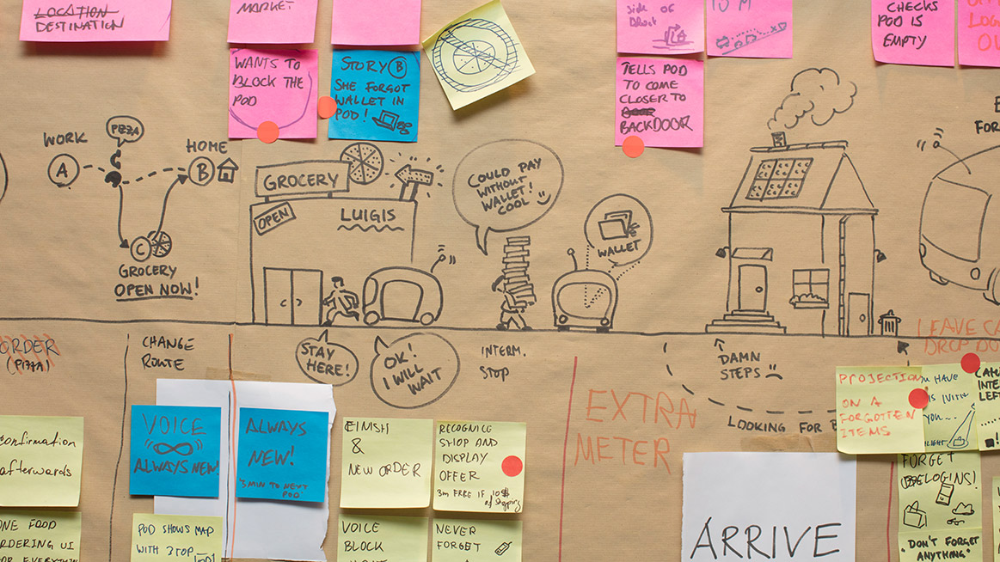
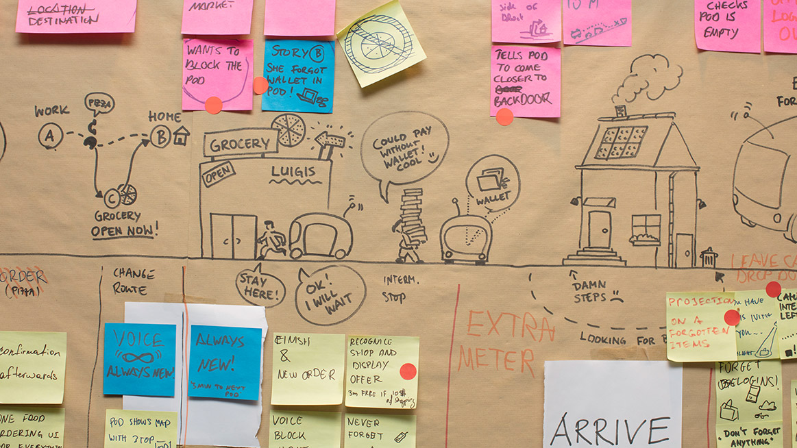
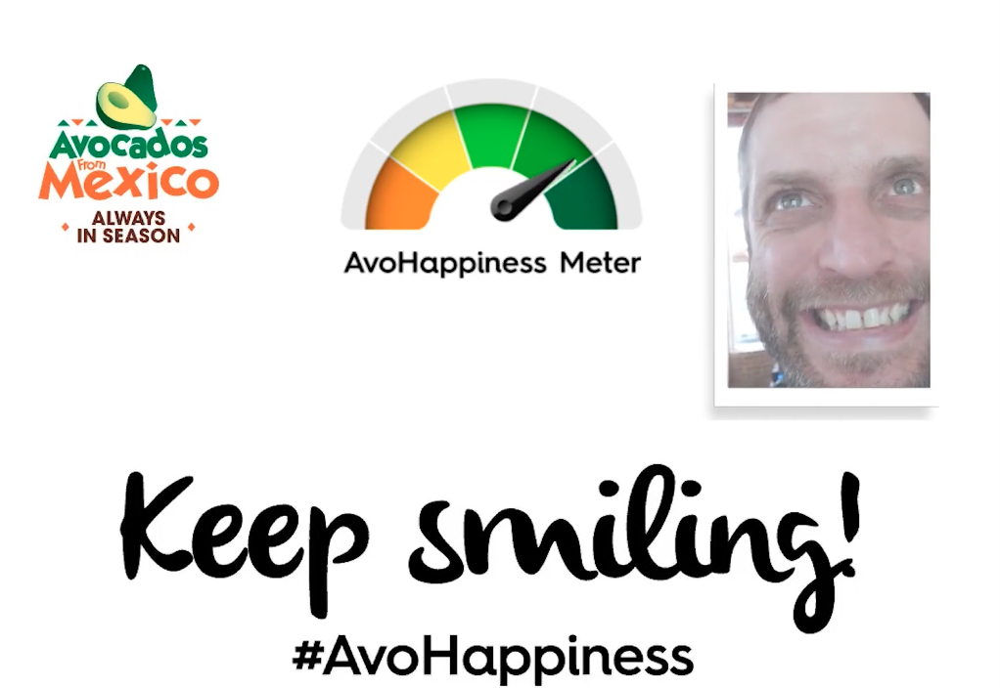
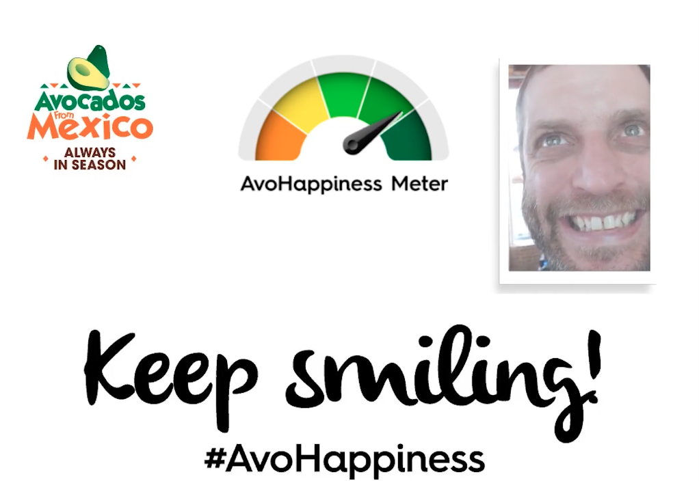

Violet Forest // ⍣٭⋆⋆⍣
⋆⋰⋆⍣٭⍣ scroll → ٭⋆⍣⋆⋰
⋆⋰⋆⍣٭⍣ scroll → ٭⋆⍣⋆⋰
I worked as a full-time employee at Volkswagen Future Center Europe in Berlin, Germany. I collaborated with UX designers and technologists to conceptualize and rapid prototype UX solutions for Level 3-5 self-driving vehicles in private and car-pooling situations.
 
The following includes some rapid prototyping projects I have worked on:


We also collaborated with Porsche on a mixed-reality experience.
The Avocados from Mexico Kiosk was an openCV-based Emotion Tracking game featured at SXSW 2017. It was done in-house independent contractor in collaboration with NEXT/NOW agency in Chicago.
 

Design sketch in Photoshop/Illustrator.
Building a webmidi system to interact with Three.js sketches using fader/knobs.
Playing with lights, cookies, and the tree generator in Unity3d.
Programmatically playing with particle systems and geometry in Unity3d. Audio by Moisés Horta.
Audio with visuals by Camila Roriz
some GLSL shader sketches